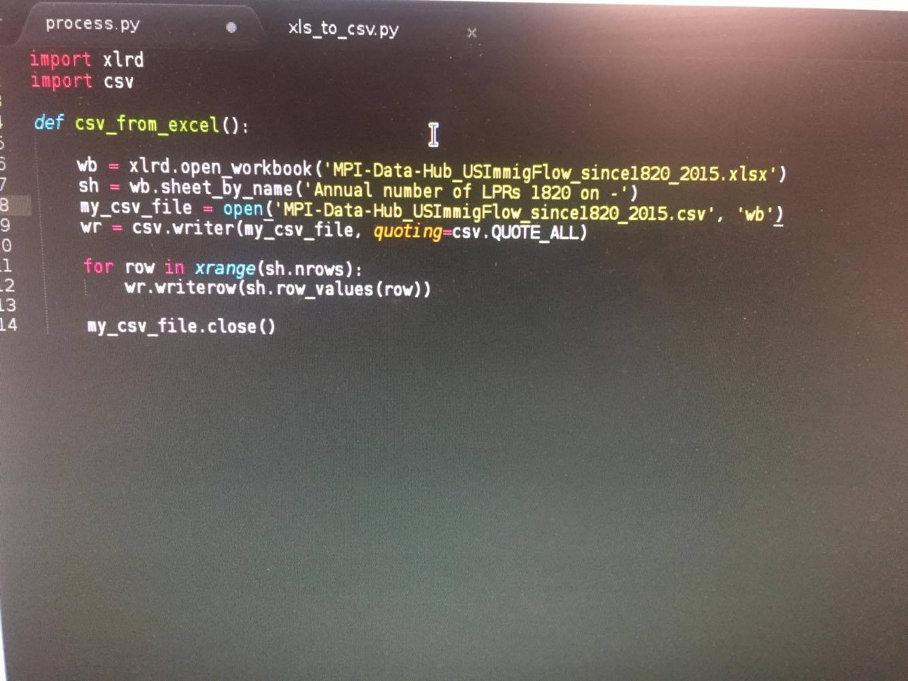

Project Overview The aim of this project is to create an overview of immigration into the United States and investigate the effect it has on the economy and current citizens. We will specifically examine the impact of immigration on the unemployment rate and wages of non-immigrants, both on a national and state level.
Hypothesis We hypothesize that as immigrants, both legal and illegal, entered the United States, the non-immigrant unemployment rate increased and wage rate decreased, especially for low-skilled workforces.
Collected Data So far we have collected immigration data from the years 1998 to 2015, organized by year and the continent the immigrants came from. We also have a data on the number of legal permanent residents per year, in addition to a wide range of US census data specifying wages, occupations, industries, employment rates, and numerous other metrics broken across multiple demographics.We will use code like the following to convert the excel data into data that can be easily processed by our algorithms.
This graph plots the number of legal immigrants against the average yearly unemployment rate in the US from 1948 to 2015. We plan to run numerous correlation/machine learning algorithms on this general data set to extract conclusions about the relationship of these two metrics.
We include this graph (from Wikipedia) as supporting background information for our research question.
{kind=link}